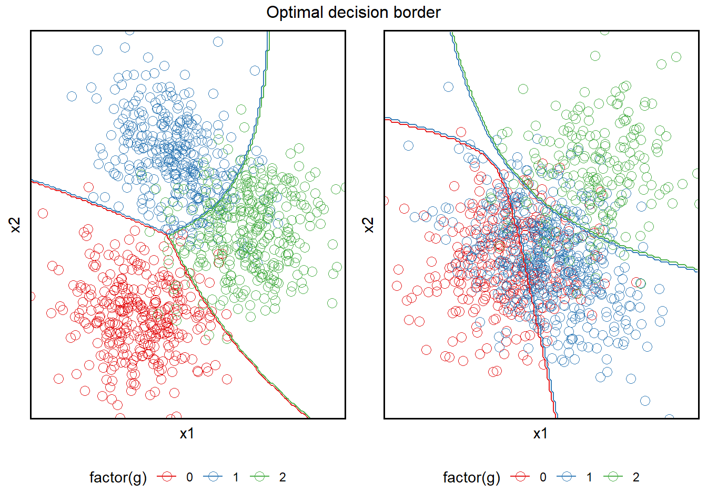

Both are non-parametric. This means that the data distribution cannot be defined in a few parameters. In other words, Decision trees and KNN’s don’t have an assumption on the distribution of the data. While decision tree supports automatic feature interaction, KNN doesn’t.Moreover decision trees can be faster, however, KNN tends to be slower with large datasets because it scans the whole dataset to predict as it doesn’t generalize the data in advance.
Decision Trees: Advantages:
Decision trees are effective in capturing non-linear relationships which can be difficult to achieve with other algorithms like Support Vector Machine and Linear Regression.
Easy to explain to people: This is a great aspect of decision trees. The outputs are easy to read without requiring statistical knowledge or complex concepts.
Some people believe decision trees more closely mirror human decision-making than others like regression and classification approaches.
Trees can be displayed graphically and can be easily interpreted by non-experts.
Decision trees can easily handle qualitative (categorical) features without the need to create dummy variables.
Disadvantages:
don’t have the same level of predictive accuracy as some of other regression and classification approaches
trees can be non-robust. Eg. small change in the data can cause a large change in the final estimated tree
As the tree grows in size, it becomes prone to overfitting and requires pruning
KNN: Advantages:
Simple and intuitive: Similar to decision trees it is simple and easy to explain to laypeople.
Non-parametric, therefore, it doesn’t have any assumptions on the data distribution
No training step: KNN is more of an exception to the general machine learning workflow. It doesn’t have a training/validation/test set. The model created with KNN is available in a labeled dataset, placed in metric space. Say, if you want to classify any object, the model has to read through all the data and compare the distances of the closest objects.
Easy to implement for multi-class problems: Compared to other algorithms, it is very easy to predict multiclass problems. Just supply the ‘k’ a value that is equivalent to the number of classes and you are good to go.
Few hyperparameters: When working with K-NN, you just need to provide two parameters, k (the numbers of neighbors to consider) and the choice of Distance Function (e.g. Euclidean, Manhattan distance).
Used for classification and regression: It can be used for classification and regression
Instance-based learning (lazy learning): You don’t need to fit a model in advance, just provide the data point and it will give you the prediction.
Disadvantages:
Slow with a larger dataset. If it is going to classify a new sample, it will have to read the whole dataset, hence, it becomes very slow as the dataset increases.
Curse of dimensionality: KNN is more appropriate to use when you have a small number of inputs. If the number of variables grows, the KNN algorithm will have a hard time predicting the output of a new data point.
Feature inputs need to be scaled: It is a must that the features should be scaled. KNN uses distance criteria, like Euclidean or Manhattan distances, therefore, it is very important that all the features have the same scale.
Outlier sensitivity: KNN is very sensitive to outliers. Since it is an instance-based algorithm based on the distance criteria, if we have some outliers in the data, it is liable to create a biased outcome.
Missing Value not treated: It is not capable of treating or dealing with missing values
Class imbalance can be an issue: If we have an imbalanced class data, the algorithm might wrongly pick the majority class.
For dataset of KNN we chose a dataset with a similar distribution and dispersion between the class, to avoid the confusion of the model in the bodaries areas. For dataset for decision tree,we generate data without clear boundaries and a unbalanced number of samples between the classes, because we kwon this can affect the perform of KNN.
